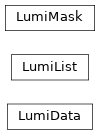

coffea.lumi_tools
Tools to parse CMS luminosity non-event data
These tools are currently tailored to the CMS experiment data formats, however they could be generalized and/or compartmentalized into a standalone package.
Classes
|
Holds per-lumiSection integrated lumi values |
|
Mergeable list of unique (run, lumiSection) values |
|
Holds a luminosity mask index, and provides vectorized lookup |
Class Inheritance Diagram
